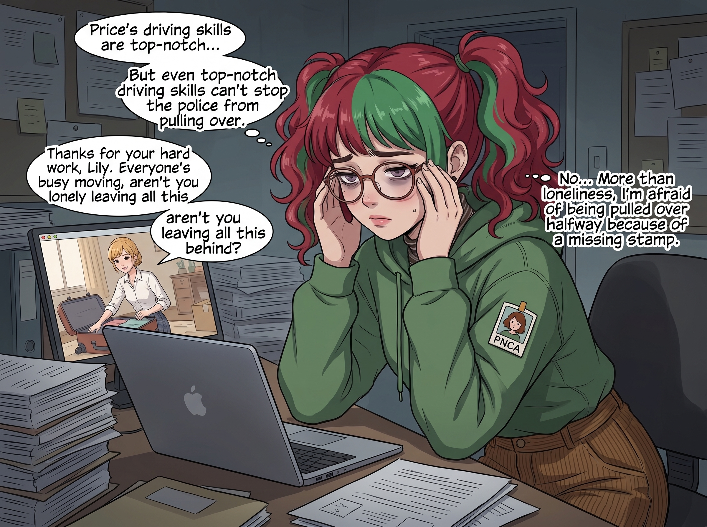

留守的最後一班崗（倒敘）

搬遷當天凌晨四點，波特蘭工坊已經人去樓空，只剩下 Lily 一個人，坐在即將被拆除的辦公桌前，面前攤著三台筆記本電腦。
她沒有跟著車隊出發。這不是因為被排除在外，而是她自己主動申請留下——比起在車隊裡跟著興奮尖叫，她更清楚，這場遷徙真正的風險不在路上，而在紙上。
一、看不見的戰場
過去三天，Lily 幾乎沒有闔眼。
她要在車隊出發前，完成波特蘭這邊所有的行政收尾：註銷工坊的營業登記、辦理稅務遷址申報、跟俄勒岡州環保署提交場地復原確認書，同時還要跟華盛頓州交通部往返確認跨州超限運輸的路線審批——兩節重達數十噸的火車車廂要合法上路，光是橋樑限高測繪和路線備案，就是一疊足以壓垮普通人的文件。
「Price 學姐開車技術是硬核，」Lily 揉著發脹的太陽穴，對著視訊另一頭已經在收拾行李的 Kate 喃喃自語，「但硬核擋不住警察攔車。」
Kate 在螢幕裡笑了笑：「辛苦妳了，Lily。大家都在忙搬家的事，妳一個人留下來處理這些，會不會很孤單？」
「不會，」Lily 推了推眼鏡，語氣一如既往地平靜，「比起孤單，我更怕的是車隊開到半路，因為一張漏蓋的印章被攔在路肩。」
二、平淡卻紮實的準備
凌晨五點，Lily 終於把最後一份《跨州特種超限運輸許可證》列印出來，仔細核對了每一頁的騎縫章。
她沒有動用任何誇張的手段，沒有駭入任何系統，甚至沒有熬夜想什麼刁鑽的說辭。她只是老老實實地，按照正常流程，把每一份該申請的文件都準時遞交、每一通該打的電話都打了、每一個該確認的細節都反覆確認過三次。
這是她少數幾次，沒有動用任何黑魔法就解決問題的時刻。
不是她做不到。以她的手法，隨便找幾個審批單位的漏洞，或者用幾封措辭巧妙的信件施壓，也能加快流程、少跑幾趟。但她這次刻意沒有這麼做。
黑魔法終究是一種賭博——用冷門法規去施壓，永遠存在對方惱羞成怒、反過來刁難查核的風險；用巧妙話術去說服，也可能遇上不吃這一套、反而較真到底的承辦人員。任何一次戰術性的操作，都有那麼一絲機率會弄巧成拙，捅出一個誰也料不到的簍子。
而這一次，賭注太大了。車隊裡坐著她在這個世界上唯一在乎的人，她不能容許任何一丁點的不確定性，去換取那百分之一秒的效率。所以她選擇了最笨、卻也最穩妥的路——把每一份文件都準備得無懈可擊，讓對方連刁難的空間都找不到。合規，才是這次唯一不會反噬的武器。
天快亮的時候，她把整理好的文件夾快遞給即將在州界檢查站等候的 Victoria，附上一張手寫的便條：「學姐，路線、橋樑限高、駕駛資質認證都已經核對三遍。如果被攔下，直接出示這份文件夾最上面那份，不需要多說。」
三、留在原地的告別
車隊出發那天早上，Lily 一個人站在已經清空的舊鐵道旁，看著最後一輛工程車緩緩駛離。
她的手機震動了一下，是 Chloe 傳來的訊息：「小天使，我們上路了！妳什麼時候過來？」
Lily 看著訊息，笑了笑，回覆道：「文件都準備好了，你們路上會很順利的。我這邊處理完最後的場地移交，就搭火車過去跟你們會合。」
她沒有提到，自己其實把離開波特蘭的最後一晚，一個人留在了空蕩蕩的舊工坊裡，安靜地看著這個曾經徹底改變她人生的地方，被最後一絲晨光染成了溫暖的金色。
故事的時間點，實際發生在第二季末、搬遷當日